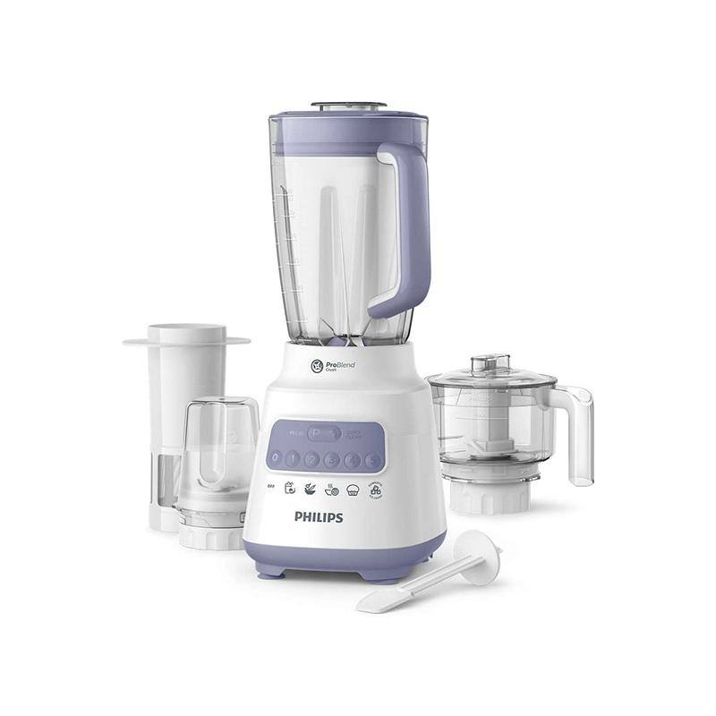
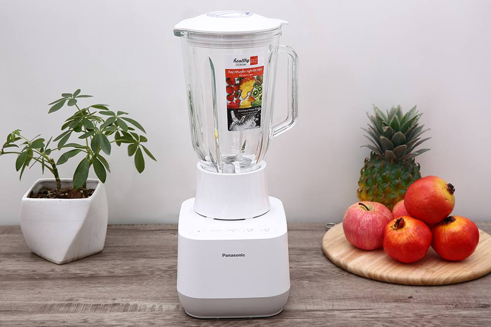
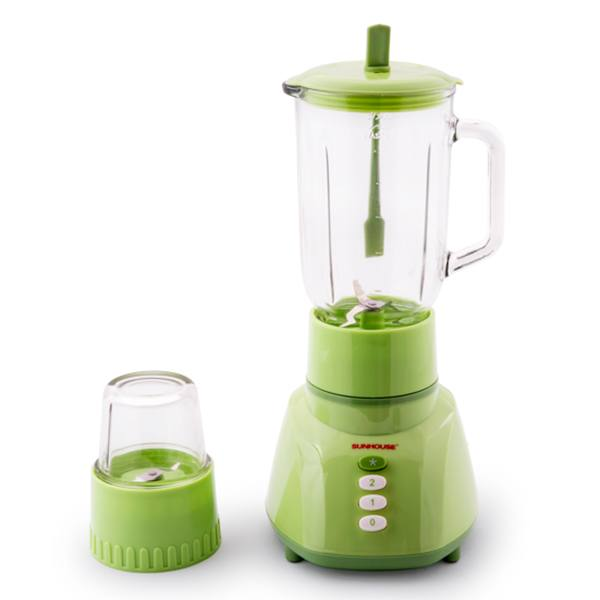
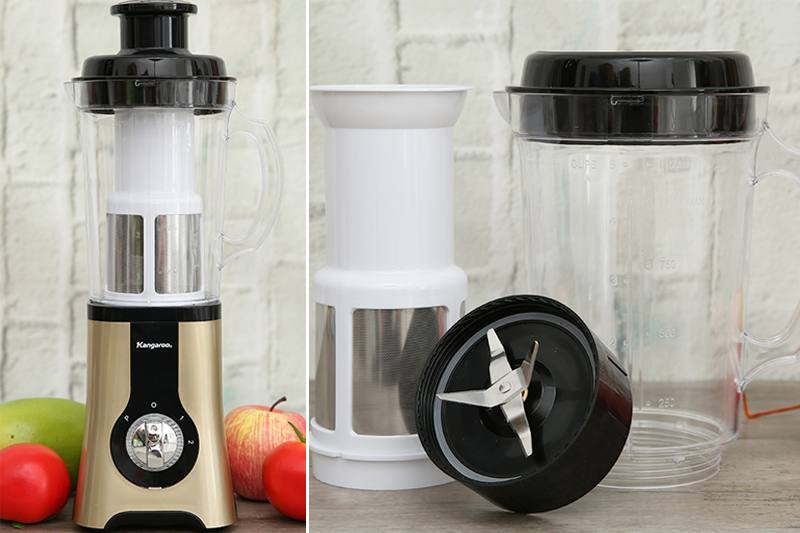
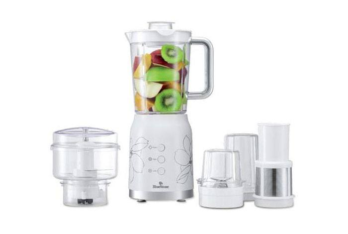

Sáng nào mình cũng xay một cốc sinh tố trước khi đi làm. Thói quen này bắt đầu từ cái máy xay cũ của mẹ: kêu như máy cày, xay sinh tố xoài mà vẫn còn lợn cợn miếng to. Đổi sang máy mới mới thấy, cùng là xay sinh tố mà khác nhau một trời một vực.
Máy xay tưởng đơn giản nhưng chọn sai thì khổ: xay không nhuyễn, ồn ào, cối nứt sau vài tháng. Bài này mình so sánh 5 mẫu phổ biến, từ dưới 1 triệu đến hơn 2 triệu, để bạn chọn đúng ngay từ đầu.
5 tiêu chí chọn máy xay sinh tố
1. Công suất: con số đầu tiên cần nhìn
Máy dưới 350W chỉ xay được trái cây mềm như chuối, xoài chín. Muốn xay đá viên, xay hạt cứng hay làm sữa hạt thì phải từ 500W trở lên. Đừng ham máy yếu giá rẻ rồi về xay đá, mô tơ quá tải cháy khét là chuyện thường.
2. Cối xay: thủy tinh hay nhựa
Cối thủy tinh nặng, trong, không ám mùi, nhìn sang. Nhược điểm là rơi thì vỡ, và máy sẽ nặng hơn khi bê. Cối nhựa nhẹ, khó vỡ, hợp nhà có trẻ con, nhưng dùng lâu dễ xước và có thể ám mùi nếu bạn hay xay đồ nặng mùi. Không có đáp án đúng cho tất cả, tùy nhà bạn ưu tiên cái gì.
3. Lưỡi dao
Dao càng nhiều cánh, thép càng dày thì xay càng nhuyễn và bền. Một chi tiết ít người để ý: lưỡi dao tháo rời được thì vệ sinh dễ hơn hẳn, nhất là khe dưới đáy cối nơi sinh tố hay két lại.
4. Dễ vệ sinh
Đây là tiêu chí nhiều người bỏ qua lúc mua rồi hối hận lúc dùng. Cối miệng rộng, ít khe kẽ thì rửa 1 phút là xong. Cối thiết kế rườm rà, nhiều góc chết thì mỗi lần rửa là một lần nản, dần dần bạn sẽ lười xay luôn.
5. Thương hiệu và bảo hành
Máy xay là đồ điện quay tốc độ cao, mô tơ mà dở thì cháy sau vài tháng. Nên chọn hãng có bảo hành chính hãng và trạm bảo hành ở Việt Nam. Đừng mua máy không tên tuổi chỉ vì rẻ hơn vài trăm nghìn, hỏng là coi như bỏ vì không có linh kiện thay.
Top 5 máy xay sinh tố đáng mua 2026
Minh bạch: các nút "Xem giá" trong bài là link affiliate Shopee. Bạn mua giá không đổi, mình nhận một khoản hoa hồng nhỏ để duy trì blog.
| # | Mẫu | Giá tham khảo | Điểm nổi bật |
|---|---|---|---|
| 1 | Philips HR2223 | ~1.200.000đ | Cân bằng nhất, bền, bảo hành tốt |
| 2 | Panasonic MX-MG53 | ~2.300.000đ | Khỏe nhất, xay đá tốt |
| 3 | Sunhouse SHD5112 | ~900.000đ | Rẻ nhất mà đủ dùng |
| 4 | Kangaroo KG4B3 | ~1.500.000đ | Nhiều cối, đa năng |
| 5 | BlueStone BLB-5335 | ~1.800.000đ | Thiết kế đẹp, máy êm |
1. Philips HR2223 (khoảng 1.5L)

Giá tham khảo: khoảng 1.200.000đ (giá thay đổi theo đợt sale)
Con này mình đánh giá là cân bằng nhất ở tầm giá 1 triệu. Công suất tầm 450W, đủ xay nhuyễn sinh tố trái cây, xay đá nhỏ cũng được nếu bạn không lạm dụng. Cối nhựa 1.5L nhẹ tay, lưỡi dao 4 cánh xay khá mịn. Điểm mình thích là máy chạy ổn định, ít rung lắc so với mấy máy cùng tầm giá. Với nhu cầu xay sinh tố hàng ngày cho 2 đến 4 người, không cần nghĩ nhiều, lấy con này.
- Xay nhuyễn, ít rung lắc ở tầm giá
- Cối 1.5L vừa đủ cho gia đình nhỏ
- Thương hiệu lớn, bảo hành yên tâm
- Xay đá viên to thường xuyên thì hơi đuối
- Cối nhựa, dùng lâu cần giữ gìn
Hợp với ai: người chỉ xay sinh tố trái cây, muốn mua một lần bền lâu.
Xem giá tốt nhất trên Shopee →2. Panasonic MX-MG53

Giá tham khảo: khoảng 2.300.000đ (giá thay đổi theo đợt sale)
Nếu nhà bạn hay xay đá, xay hạt, làm sữa hạt thì đây là con nên nhìn đầu tiên. Công suất tầm 550W, mô tơ Panasonic vốn nổi tiếng bền, xay đá viên nghe tiếng máy vẫn "ngọt", không có cảm giác gồng mình như mấy máy yếu. Giá 2.3 triệu là cao nhất danh sách, nhưng tiền nào của nấy. Nhà nào xay mỗi ngày, xay đủ thứ từ sinh tố đến cháo, bột thì đầu tư con này không phí.
- Công suất khỏe, xay đá và hạt tốt
- Mô tơ bền, ít hỏng vặt
- Xay nhuyễn mịn
- Giá cao nhất danh sách
- Máy hơi nặng, chiếm diện tích
Hợp với ai: người hay xay đá, làm sữa hạt, dùng máy mỗi ngày.
Xem giá tốt nhất trên Shopee →3. Sunhouse SHD5112

Giá tham khảo: khoảng 900.000đ (giá thay đổi theo đợt sale)
Dưới 1 triệu mà vẫn là hàng hãng Việt Nam có bảo hành đàng hoàng, đó là điểm mạnh nhất của Sunhouse SHD5112. Công suất tầm 350W nên bạn đừng đòi hỏi nó xay đá, nhưng xay sinh tố trái cây mềm cho 2 đến 3 người thì quá ổn. Mình gợi ý con này cho các bạn sinh viên ở trọ, hoặc mua cho ông bà ở quê dùng đơn giản. Nhu cầu cơ bản, tiền ít, lấy con này không sai.
- Giá rẻ nhất mà vẫn có thương hiệu
- Đủ dùng cho nhu cầu xay sinh tố cơ bản
- Gọn nhẹ, dễ cất
- Công suất yếu, không xay được đá
- Xay hơi ồn so với máy đắt tiền
Hợp với ai: ngân sách dưới 1 triệu, nhu cầu xay cơ bản.
Xem giá tốt nhất trên Shopee →4. Kangaroo KG4B3

Giá tham khảo: khoảng 1.500.000đ (giá thay đổi theo đợt sale)
Điểm ăn tiền của Kangaroo KG4B3 là bộ cối đi kèm: ngoài cối xay sinh tố còn có thêm cối nhỏ để xay thịt, xay hạt khô, xay gia vị. Mua 1 được 3, 4, đỡ phải sắm thêm máy xay thịt riêng. Công suất ở mức khá, xay sinh tố nhuyễn, xay thịt làm chả cũng được nếu bạn cắt nhỏ trước. Nhà nào thích một máy làm đủ việc thì đây là lựa chọn hợp lý ở tầm 1.5 triệu.
- Nhiều cối đi kèm: xay sinh tố, xay thịt, xay hạt
- Giá tầm trung, thay được 2 đến 3 máy riêng lẻ
- Hãng Việt Nam, bảo hành dễ
- Nhiều phụ kiện nên tốn chỗ cất
- Xay đá vẫn không khỏe bằng Panasonic
Hợp với ai: người muốn một máy làm đủ việc: sinh tố lẫn xay thịt.
Xem giá tốt nhất trên Shopee →5. BlueStone BLB-5335

Giá tham khảo: khoảng 1.800.000đ (giá thay đổi theo đợt sale)
BlueStone là hãng Singapore, đồ gia dụng của hãng này thường có thiết kế nhỉnh hơn mặt bằng chung, con BLB-5335 cũng vậy: thân máy thon gọn, màu sắc trang nhã, để trong bếp hiện đại rất hợp. Công suất ở mức khá, xay sinh tố nhuyễn mịn, độ ồn được kiểm soát tốt hơn mấy máy giá rẻ. Giá 1.8 triệu không phải rẻ, nhưng nếu bạn vừa cần máy tốt vừa quan tâm bếp đẹp thì đáng cân nhắc.
- Thiết kế đẹp, hợp bếp hiện đại
- Xay nhuyễn, độ ồn thấp
- Hoàn thiện tốt
- Giá cao hơn Philips HR2223 mà hiệu năng tương đương
- Ít cối phụ kiện đi kèm
Hợp với ai: người ưa bếp đẹp, thích máy chạy êm.
Xem giá tốt nhất trên Shopee →Cách mình chấm điểm (công khai)
| Tiêu chí | Trọng số |
|---|---|
| Công suất & độ khỏe | 35% |
| Chất liệu cối & lưỡi dao | 25% |
| Độ bền & bảo hành | 20% |
| Dễ vệ sinh | 10% |
| Giá | 10% |
Điểm mỗi sản phẩm là trung bình có trọng số theo các tiêu chí trên, dựa trên đánh giá thật của người mua và thông số hãng công bố.
Kết luận: nên mua loại nào?
- Ngân sách dưới 1 triệu, nhu cầu cơ bản: Sunhouse SHD5112. Rẻ, đủ dùng, có bảo hành hãng.
- Cân bằng nhất, không muốn nghĩ nhiều: Philips HR2223. Tầm 1.2 triệu, xay ngon, bền, bảo hành tốt.
- Hay xay đá, xay hạt, dùng mỗi ngày: Panasonic MX-MG53. Đắt nhưng khỏe và bền nhất.
- Muốn một máy làm đủ việc: Kangaroo KG4B3. Nhiều cối, xay sinh tố lẫn xay thịt.
- Ưa bếp đẹp, máy êm: BlueStone BLB-5335. Thiết kế nhỉnh hơn hẳn tầm giá.
Quy tắc nhanh của mình: chỉ xay sinh tố trái cây thì lấy Philips HR2223. Còn hay xay đá, làm sữa hạt thì đừng tiếc tiền, lên thẳng Panasonic MX-MG53.
Mẹo dùng máy xay bền hơn
Mấy kinh nghiệm này giúp mô tơ và lưỡi dao bền hơn hẳn:
- Cắt nhỏ trái cây trước khi xay, đừng nhồi đầy cối rồi bắt máy gồng. Miếng càng to, mô tơ càng mệt.
- Cho chất lỏng vào trước, đồ cứng vào sau. Nước hoặc sữa ở dưới giúp lưỡi dao quay trơn ngay từ đầu, xay nhanh nhuyễn hơn.
- Không xay liên tục quá 1 đến 2 phút. Cho máy nghỉ 30 giây giữa các mẻ, mô tơ nóng quá là giảm tuổi thọ nhanh lắm.
- Rửa ngay sau khi dùng. Đừng để sinh tố khô két lại trong cối, nhất là khe dưới lưỡi dao, vừa khó rửa vừa ám mùi.
- Lưỡi dao cùn thì thay. Dao cùn xay không nhuyễn mà còn bắt mô tơ làm việc nặng hơn. Hãng nào cũng bán lưỡi dao thay thế.
Câu hỏi thường gặp
Máy xay sinh tố có xay được đá không?
Tùy công suất. Máy từ 500W trở lên như Panasonic MX-MG53 xay đá viên thoải mái. Máy dưới 400W thì không nên, vừa xay không nổi vừa dễ cháy mô tơ. Nếu bạn hay uống sinh tố đá xay, hãy chọn máy khỏe ngay từ đầu.
Cối nhựa có an toàn không?
An toàn nếu là nhựa không chứa BPA của hãng uy tín. Philips, Panasonic, Sunhouse đều ghi rõ chất liệu cối trên bao bì. Tránh mua cối nhựa không rõ nguồn gốc, nhựa dở gặp đồ nóng có thể thôi nhiễm chất không tốt.
Sao máy xay có mùi khét khi dùng?
Đó là mùi mô tơ quá tải: bạn xay quá lâu một mạch, hoặc nhồi quá nhiều đồ cứng. Tắt máy, cho nghỉ 15 đến 20 phút rồi xay tiếp với lượng ít hơn. Nếu mùi khét xuất hiện ngay cả khi xay nhẹ thì nên mang đi bảo hành, có thể mô tơ đã yếu.